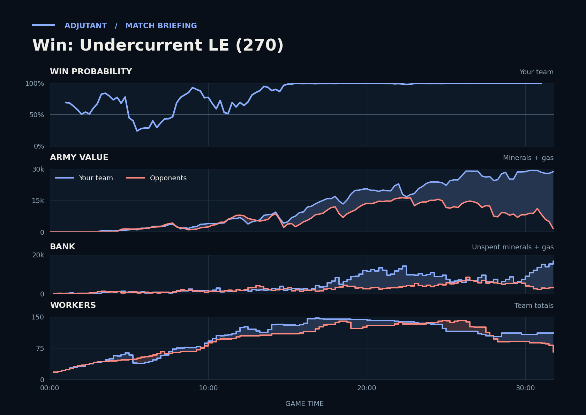

Cached narration uses different analysis inputs (facts, engine notes, prompts or model settings). It has not been regenerated for this report.
Win. Scallop's Battlecruisers razed CONSTANTINE's economy from 27:23 and lost nothing.
Why
27:23–28:54: Scallop's Battlecruisers razed CONSTANTINE's fifth and eighth bases; their workers never got back to 62.
28:00: CONSTANTINE's income, hidden from you, had dropped to 358 a minute, and their workers never recovered.
30:45–31:47: TakeTheTip's Brood Lords and Hydralisks killed Stalkers, Corruptors killed Void Rays; HEROtemu left at 31:13.
Try next game
TakeTheTip: At 4 free supply around 2:50, start an Overlord before the next Zergling or Queen round. Check: never under 2 free supply 3:00–4:00.
Scallop: When minerals pass 2,000 after 20:00, queue Battlecruisers on every idle Starport. You banked about 6,000 minerals at 24:00.

Written by claude-sonnet-5-5 from a different set of analysis inputs.
Current engine analysis: turning points, whole game, habits
Debrief
Win. Review 7:47–8:45: you won a fight (5,675 killed, 3,475 lost). The biggest fight came at 30:45–31:47 (2,850 lost, 17,550 killed).
Team MMR 3704 vs 3571 against HEROtemu (Protoss), CONSTANTINE (Terran). Starting win chance 69%.
Try next game
Scallop: answer Siege Tanks with Banshees/Liberators; TakeTheTip: answer Siege Tanks with Brood Lords/Mutalisks/Ravagers. Check: at least 6 of those within two minutes of their first Siege Tank.
TakeTheTip: by 4:26 keep a few units or a defensive structure at the mineral line and pull workers the moment the attack lands; check: fewer than 5 workers lost.
TakeTheTip: you had 9,379 unspent at 20:15; add production or a base whenever unspent passes 1,000. Check: under 1,000 at every minute mark after 8:00.
Turning points
4:15–5:37: TakeTheTip lost 20 Drones to Hellions. Win chance 77% to 29%.
TakeTheTip lost 20 Drones between 4:56 and 5:12, to Hellions (15 kills), Dark Templars (5).
Scallop lost 4 SCVs, to Dark Templars (4 kills).
Fighting: you lost 900 of army at your bases and killed 1,350 of theirs. Going in, your armies were worth 650 against their 250.
Your losses: 3 Queens, 11 Zerglings, 1 Hellion; killed mostly by Dark Templars (13 kills), Hellions (2).
Their losses: 3 Dark Templars, 6 Hellions.
Buildings destroyed: yours worth 525, theirs 0.
What moved the win chance: economy -48%, army -7%, tech +5%
Try: TakeTheTip: by 4:26 keep a few units or a defensive structure at the mineral line and pull workers the moment the attack lands; check: fewer than 5 workers lost.
7:47–8:45: you won a fight (5,675 killed, 3,475 lost). Win chance 46% to 90%.
Fighting: you lost 3,375 of army at your bases and killed 5,675 of theirs. Going in, your armies were worth 3,650 against their 4,325.
Your losses: 5 Siege Tanks, 11 Hellbats, 5 Roaches, 8 Zerglings; killed mostly by Siege Tanks (18 kills), Archons (4).
9:30–11:00: army value: yours 2,525→4,300, theirs 1,325→4,625. Win chance 87% to 53%.
Army value: yours 2,525→4,300, theirs 1,325→4,625.
What moved the win chance: army -25%, tech -12%, economy -3%
14:13–15:26: you won a fight (12,100 killed, 7,275 lost). Win chance 88% to 99%.
Fighting: you lost 6,775 of army at your bases and killed 12,100 of theirs. Going in, your armies were worth 9,475 against their 8,650.
Your losses: 6 Ultralisks, 65 Zerglings, 3 Siege Tanks, 4 Hydralisks; killed mostly by Immortals (24 kills), Marines (22).
Their losses: 6 Archons, 6 Immortals, 40 Marines, 14 Marauders.
Buildings destroyed: yours worth 400, theirs 0.
What moved the win chance: army +10%
Across the whole game
TakeTheTip had 9,379 unspent at 20:15.
Scallop had 8,307 unspent at 24:00.
TakeTheTip lost 32 Ultralisks (15,200) over the game, mostly to Immortals (18), Marauders (6).
Enemy Void Rays (they made 10) destroyed 6,100 of your value (8 Corruptors, 7 Brood Lords, 2 Missile Turrets). Counters built after they first struck at 27:03: Scallop made 12 Missile Turrets; TakeTheTip made 39 Corruptors, 14 Hydralisks, 7 Spore Crawlers.
Enemy Siege Tanks (they made 12) destroyed 3,500 of your value (33 Zerglings, 5 SCVs, 4 Roaches). Counters built after they first struck at 7:49: Scallop made none; TakeTheTip made none.
Engine debrief-v3-0.7. Losses count only units killed by an enemy. Win chance comes from a model trained on your earlier games.
Earlier replay bookmarks
Earlier moments to revisit, considering both teammates. Each row groups nearby losses. Engine and chart windows may include other simultaneous losses. Values are minerals + gas. These bookmarks do not grade the decisions.
Local losses: Scallop lost 4 SCVs, 1 Hellion (300); TakeTheTip lost 3 Queens, 1 Hatchery, +12 others (1,225); duo total 1,525; opponents lost 1 Dark Templar, 2 Hellions (450)
Other recorded losses in this window: TakeTheTip lost 20 Drones, 1 Spore Crawler, +1 others (1,100); opponents lost 2 Dark Templars, 4 Hellions (900)
Local losses: Scallop lost 5 Siege Tanks, 11 Hellbats, 2 SCVs, +2 others (2,775); TakeTheTip lost 5 Roaches, 8 Zerglings (700); duo total 3,475; opponents lost 20 Zealots, 18 Marines, +13 others (5,675)
Local losses: Scallop lost 9 Siege Tanks, 1 Planetary Fortress, 4 SCVs, +7 others (4,275); TakeTheTip lost 55 Zerglings, 2 Ultralisks, 7 Drones, +6 others (3,375); duo total 7,650; opponents lost 18 Marauders, 5 Immortals, +47 others (8,300)
Replay map
◎ Historical player start · ◇ Resource cluster · ■ Completed grounded hall · □ Unfinished hall · ✕ Recorded hall ending Dashed rings show recorded events during the selected interval, not simultaneous live state. Symbols and player labels accompany colors.
Hall state
Unplaced halls
Recorded events and source evidenceExact map, registration and resource-site sources
Positive resource-site occupancy is recorded hall presence. Mining, vision, routes, local army availability and map control are unknown. The MMR-conditioned model estimate is unchanged. This panel cannot establish what caused a probability drop.
Older V2 evidence cards
Evidence-first cards are generated independently from the predictive model. Each card separates replay evidence, interpretation, past-only comparison, and an adjustment to test.
Action
Scallop sustained an unspent bank while army investment stayed low
Interpretation
Across 7 sampled checkpoints, Scallop retained a sizeable unspent bank while income stayed above the positive threshold, supply headroom stayed above the threshold, observed live production-structure count was positive, and loss-adjusted current plus in-progress army investment growth stayed low. The live-structure count may include addons, flying structures, or morphing structures; it is infrastructure evidence and does not establish queue occupancy or current training capacity. Cumulative army-loss fields are included so replacement investment is not mislabeled as no conversion. The replay shows an opportunity to test spending timing; it does not show why the bank was held.
Adjustment to test
At a comparable checkpoint next game, set a spending trigger: convert part of the bank into army or in-progress army investment while keeping a small supply buffer, then review the next checkpoint for lower bank and higher investment.
replay_fact Scallop's cumulative combat-army loss value was 7921 at 1245s and 8421 at 1335s (delta +500). at 22:15
replay_fact Scallop's current plus in-progress army investment was 11100 at 1245s and 10600 at 1335s (delta -500). at 22:15
replay_fact Scallop's income was 3370 at 1245s and 2938 at 1335s (delta -432). at 22:15
replay_fact Scallop's loss-adjusted current plus in-progress army investment growth was +0 (raw investment delta -500 plus cumulative army-loss delta +500; adjusted swing 0). at 22:15
replay_fact Scallop's observed live production-structure count was 19 at 1245s and 21 at 1335s (delta +2). at 22:15
replay_fact Scallop's supply headroom was 37 at 1245s and 50 at 1335s (delta +13). at 22:15
replay_fact Scallop's unspent resources was 4646 at 1245s and 7763 at 1335s (delta +3117). at 22:15
Past-only comparison
7 comparable prior wins; median loss-adjusted current plus in-progress army investment change +2854 at matched clock endpoints. Support: 7. Comparable replay IDs: Multiplayer/Undercurrent LE (114), Multiplayer/Undercurrent LE (151), Multiplayer/Undercurrent LE (161), Multiplayer/Undercurrent LE (164), Multiplayer/Undercurrent LE (167), Multiplayer/Undercurrent LE (183), Multiplayer/Undercurrent LE (189).
Provenance
Baseline replay IDs: Multiplayer/Undercurrent LE (114), Multiplayer/Undercurrent LE (151), Multiplayer/Undercurrent LE (161), Multiplayer/Undercurrent LE (164), Multiplayer/Undercurrent LE (167), Multiplayer/Undercurrent LE (183), Multiplayer/Undercurrent LE (189)
Retrospective replay-state association; it does not establish causation or what was knowable during play. Cancellations, tech savings, and army position or visibility are not reconstructed from these state totals. Reference windows are one per unique replay/series, strictly earlier than the target, explicit-result wins only, and use endpoints at or before each target endpoint within the configured clock tolerance; this is clock-only context, not a full pre-window state match.
Action
Scallop sustained an unspent bank while army investment stayed low
Interpretation
Across 7 sampled checkpoints, Scallop retained a sizeable unspent bank while income stayed above the positive threshold, supply headroom stayed above the threshold, observed live production-structure count was positive, and loss-adjusted current plus in-progress army investment growth stayed low. The live-structure count may include addons, flying structures, or morphing structures; it is infrastructure evidence and does not establish queue occupancy or current training capacity. Cumulative army-loss fields are included so replacement investment is not mislabeled as no conversion. The replay shows an opportunity to test spending timing; it does not show why the bank was held.
Adjustment to test
At a comparable checkpoint next game, set a spending trigger: convert part of the bank into army or in-progress army investment while keeping a small supply buffer, then review the next checkpoint for lower bank and higher investment.
replay_fact Scallop's cumulative combat-army loss value was 10946 at 1770s and 10946 at 1860s (delta +0). at 31:00
replay_fact Scallop's current plus in-progress army investment was 14375 at 1770s and 14375 at 1860s (delta +0). at 31:00
replay_fact Scallop's income was 2255 at 1770s and 2765 at 1860s (delta +510). at 31:00
replay_fact Scallop's loss-adjusted current plus in-progress army investment growth was +0 (raw investment delta +0 plus cumulative army-loss delta +0; adjusted swing 0). at 31:00
replay_fact Scallop's observed live production-structure count was 29 at 1770s and 29 at 1860s (delta +0). at 31:00
replay_fact Scallop's supply headroom was 171 at 1770s and 171 at 1860s (delta +0). at 31:00
replay_fact Scallop's unspent resources was 4541 at 1770s and 8697 at 1860s (delta +4156). at 31:00
Past-only comparison
2 comparable prior wins; median loss-adjusted current plus in-progress army investment change +2050 at matched clock endpoints. Support: 2. Comparable replay IDs: Multiplayer/Undercurrent LE (114), Multiplayer/Undercurrent LE (164).
Provenance
Baseline replay IDs: Multiplayer/Undercurrent LE (114), Multiplayer/Undercurrent LE (164)
Retrospective replay-state association; it does not establish causation or what was knowable during play. Cancellations, tech savings, and army position or visibility are not reconstructed from these state totals. Reference windows are one per unique replay/series, strictly earlier than the target, explicit-result wins only, and use endpoints at or before each target endpoint within the configured clock tolerance; this is clock-only context, not a full pre-window state match.
P(win) is an MMR-conditioned model estimate. Economy and Army Position compare the duo to historical positions at similar game times; they are not model-contribution lanes.
Raw State Comparisons
Observed tracker values, not race-normalized scores. Duo and opponent totals are shown alongside TakeTheTip and Scallop so the normalized lanes above can be checked against the underlying army, economy and bank quantities.
Observed Combat Outcomes
Positive bars favor the duo; negative bars favor the opponents. Each bar summarizes the preceding 15 seconds at a sampled boundary; selected-window summaries exclude future events. These observations do not prove the correct alternative decision.
Factual Replay Timeline
These milestones are replay facts synchronized to the selected window. They are context, not claims about what caused the result.